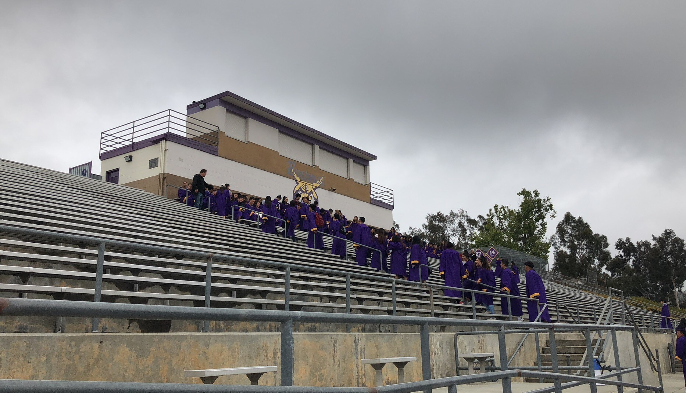
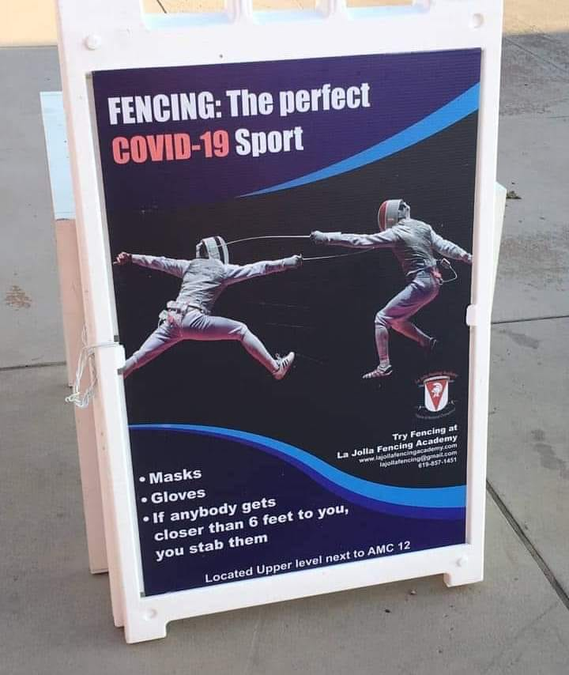
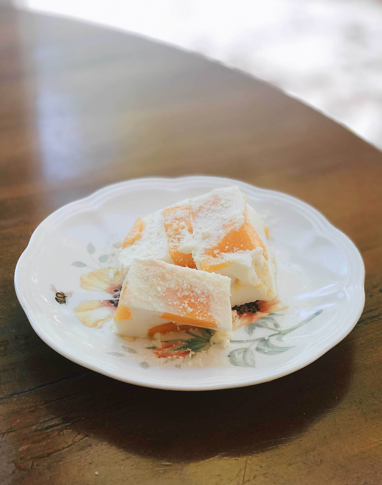

Quick Response #2
Unprecedented Times

1. An image from your archive: DBHS Class of 2018 Graduation
2. A performative action: Hiking and Watching Sunset During Quarantine

3. A screen capture or meme: Fencing The Perfect COVID-19 Sport

4. A photograph you took today: Homemade Mango Pudding